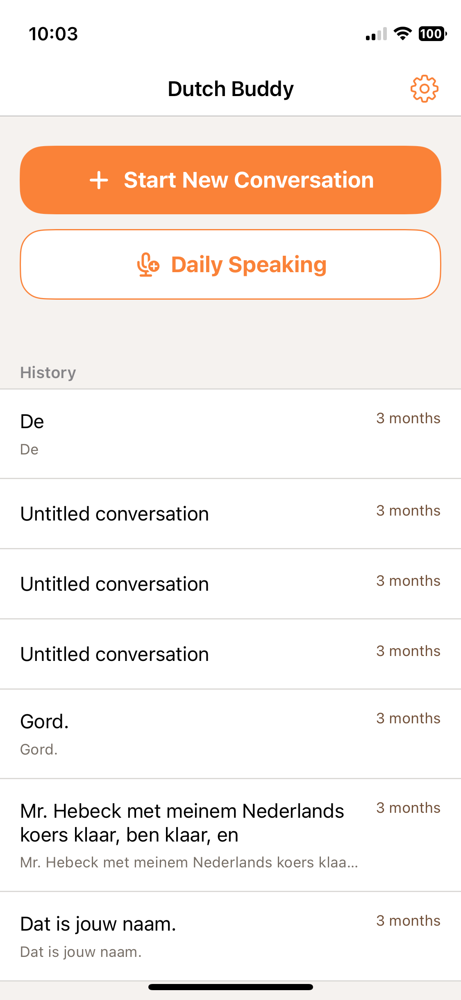
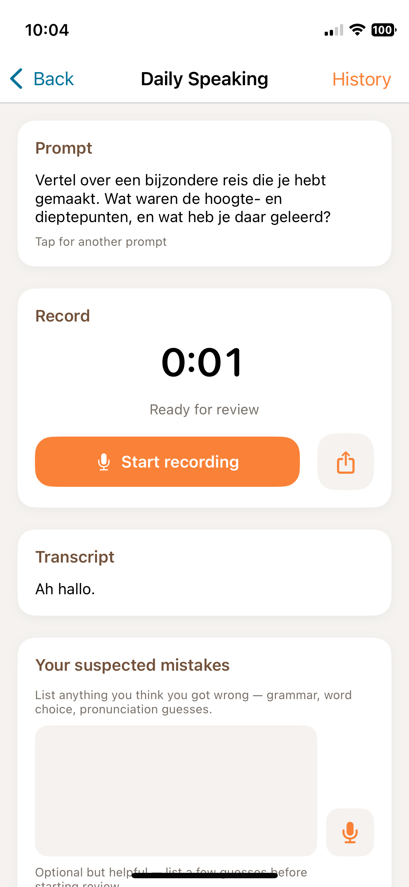
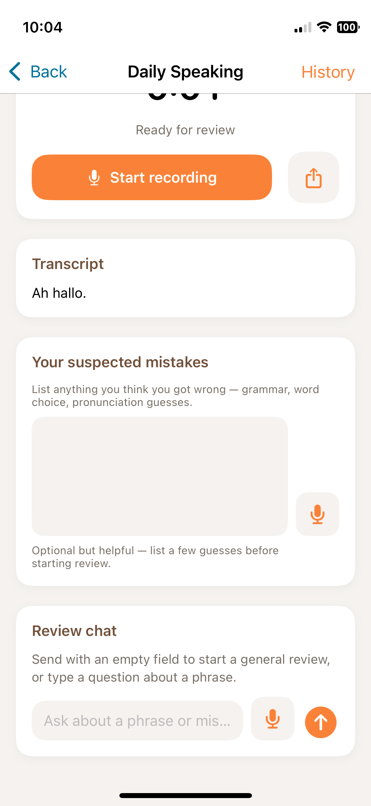

Dutch Buddy: an iOS app for practicing my Dutch
Dutch Buddy is the first iOS app I’ve ever made. Now that I have AI to help with the scaffolding and I don’t need to learn Swift myself, iOS isn’t as daunting as it used to be.
The app is not available publicly; I load it onto my phone every week with Xcode. =p
Realtime ChatGPT
I was motivated to build this app after testing out the realtime chat functionality of ChatGPT to practice my Dutch. I love the flow of being able to talk while I was walking, not needing to look at a screen.
The ChatGPT realtime models sit behind a streaming connection that + buffers audio, + detects “turns” or breaks in the conversation where the speaker pauses to indicate a reply is expected, + translates audio to text, + writes a response + which is then converted text-to-speech so that I can hear the audio response.
It’s amazing that this can happen fast enough to feel relatively natural. In English, at least.
Multi-Language Issues
There are a couple problems, however, when I try to speak in Dutch.
Turn Detection
First, I am a newbie which means that I have great big pauses while I speak Dutch as I wrack my brain for a certain word. The default settings on ChatGPT’s realtime chat are set to detect a conversation turn after a short pause. When I (frequently) exceed that short pause, ChatGPT stops listening, prepares its own response and starts replying to my half-finished sentence.
Language Setting
Second, there are times when I want to see the transcript of what I just said or what the agent just said to me.
When I open the app to look at the history of my verbal conversation with ChatGPT, my portions of the conversation are transcribed in English, not Dutch. This is because the app is using two different models to build the realtime chat experience.
While the realtime model is receiving buffered audio files that it then transcribes, the app has a separate process that collects the audio once the end-of-turn is detected and sends that audio to a different transcription model through an async API call. This process is configured to use English (probably based on my user preferences gathered from my operating system when I initially signed up) so when it receives audio other than English, it translates and transcribes.
I need the transcript of my own speech to stay true to the language I’m speaking in, Dutch.
As a side note, there is a lot more to say on this topic about mixed language usage, for example when I use an English word in the middle of a Dutch sentence because I don’t know the Dutch word. Detecting language switches in audio is tricky.
Please Repeat
Third, as a language learner, it’s really helpful to hear something repeated. When I ask the realtime chat to repeat itself (“nog een keer”), it goes through the loop of creating a new response which is never exactly the same. Usually it’s a rephrasing because the chat conversation loop has no mechanism for exactly repeating itself. It simply wasn’t designed for this use case. In this scenario, ideally it would replay the audio of its last response.
Smoothing Over Mistakes
There is also a gap sometimes when I am fumbling a word or don’t pronounce it correctly. I’ve seen this either result in a misunderstanding (the model is going to guess something rather than ask me to repeat myself) or, just as unfortunate, smoothing over my mistakes as the model guesses correctly based on sentence context (correcting “getrouwen” to “betrouwen” means that I will continue asking people if they trust each other when I mean to ask if they are engaged).
Dutch Buddy
The app I’ve built came together very quickly.
The main function is to have a conversation. This functionality kicks off a chat using a websocket to a realtime model (gpt-realtime-1.5). The language is set to Dutch and there is a prompt that emphasizes staying in Dutch and instructs the agent to give feedback appropriate for my level of Dutch.
Similar to ChatGPT’s realtime chat functionality, audio clips are asynchronously sent off for transcription (gpt-4o-transcribe) at each turn so that the UI has a record to show.
For Text-to-Speech, I’m using tts-1.
The chat also has instructions to detect a “please repeat” command and when detected, to replay the stored TTS audio clip from the most recent response, rather than going through the chat response loop again.
Model Exploration
I tried out a few different models for each distinct task. For example, whisper-1 was the first model I tried for STT transcription and I found it just wasn’t great with Dutch. gpt-4o-mini-transcribe worked better and lately I’ve upgraded to gpt-4o-transcribe.
I used gpt-realtime-mini for a little while but I think the mini just didn’t have sufficient skills. For a short time, I tried using it for both streaming conversation and producing a transcript. But I it wasn’t made for transcription, it was too strongly inclined to respond, even with a clear prompt to transcribe only.
OpenAI released gpt-realtime-1.5 and I’m much happier with it. I use it for the streaming conversation and gpt-4o-transcribe for the transcript in the UI.
So far, cost hasn’t been an influential criteria for model choice, probably since it’s just me testing.

Daily Speaking Feature
Recently, I’ve added a second feature: Daily Speaking.
My Dutch language teacher asks us at the beginning of each course to come up with a goal for the course (my first one was to make a slide about a different bird every day). This time, I decided I wanted to work on my speaking by doing a short off-the-cuff monologue everyday. Say, 2 minutes, to make sure it doesn’t feel overwhelming.

My UX design includes the following:
Generate a Prompt Optionally, you can generate a prompt if you don’t know what to talk about. This generates a prompt in Dutch, of course.
Record Audio Begin the recording. The recorder shows how long it has been recording and changes color when you’ve reached 2 minutes. You can stop anytime and continue as long as you like (or until the app hits some limit I haven’t reached).
Transcribe
When you stop the recording, a Dutch transcription is immediately generated using gpt-4o-transcribe.
The transcription is an important part of the process because I want to review it to look for mistakes I made, the heart of the learning process.
Flag Mistakes I created a text input area (with optional speech input) to identify my own mistakes. I also note transcription mistakes but I don’t currently have a feedback loop for using that data. Maybe in the future I will store the transcription mistakes separately as data I could somehow use to improve the process.
Review
I have a review area where I can type or speak or just tap a button to request a review. The conversation model (gpt-4o-mini) reviews the transcript and replies with a list of fixes and acknowledges and corrects the ones I flagged.
So far this is working great. It’s very useful in catching my grammar mistakes with word order, mismatched singular/plurals, verb tense, etc.

For those that are curious, this app was built with Cursor in the first half of 2026. I leave Cursor on Auto model selection so I don’t know which models it was working with.
Did the app work?
Sadly, I have to admit I’m not using the conversation feature. I’ve been frustrated with the mistakes the models are making.
I began building out a set of evals with recordings of my own speech (just 10 recordings to start with) to quantify testing but honestly I have run out of steam on that task. It’s not the kind of work I love doing.
I am really happy with the Daily Speaking feature - the failure there is just like any habit-building, I’m still trying to find a way to sit down and do it every day. =p